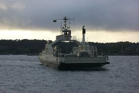

Kurir
Ornö Kurir
Lite om Kurir:
Kurir är den lite mindre bilfärjan som kör mellan Ornö och Dalarö. Denna färja var byggd i Finland och är tålig att bryta is, därför får Kurir framförallt köra på vintern. Kurir har två stycken hytter som passagerare kan sitta i, en lite större hytt med ca 25 sittplatser och en liten hytt med en solid sits med ungefär 6 platser. På vintern blir det väldigt kallt i hytterna då värmesystemet inte fungerar så bra. Det finns även ett personalrum om man går ned i färja, de rummet kunde även passagerare gå till förut men nu är det endast personal eftersom att det blev för fullt. Den personal som jobbar på Kurir är alltid en man på däck och en i styrhytten, de har walki-talkies för att prata med varandra.
